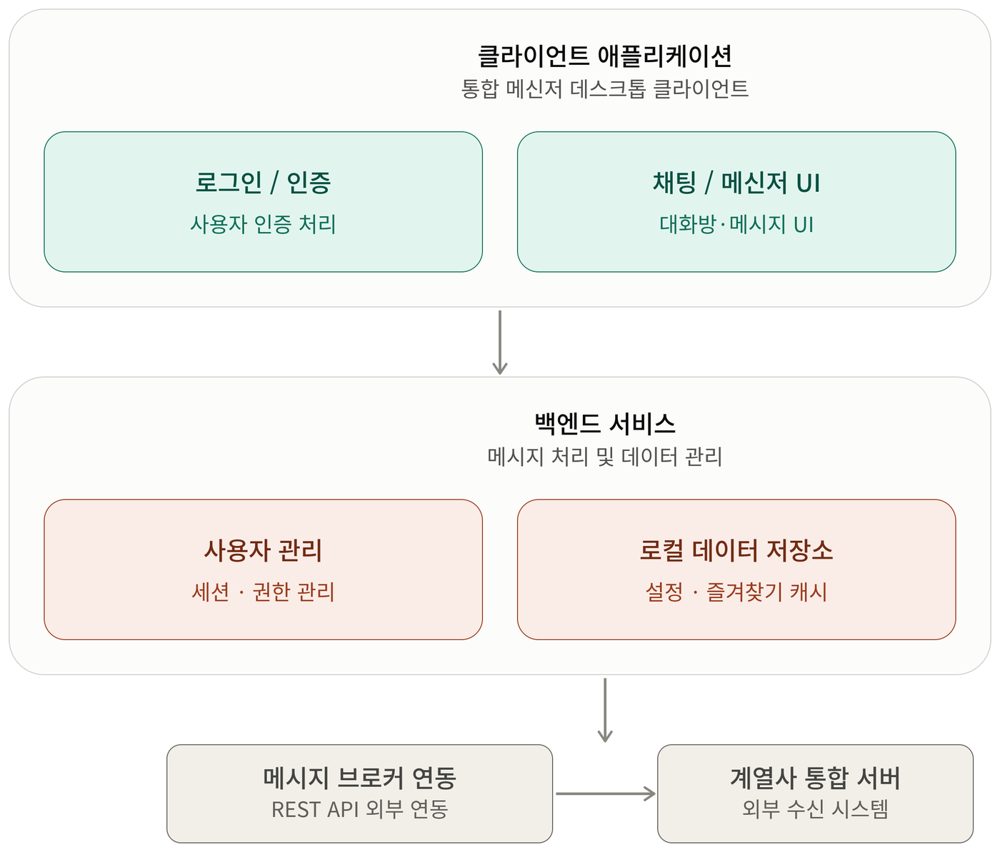
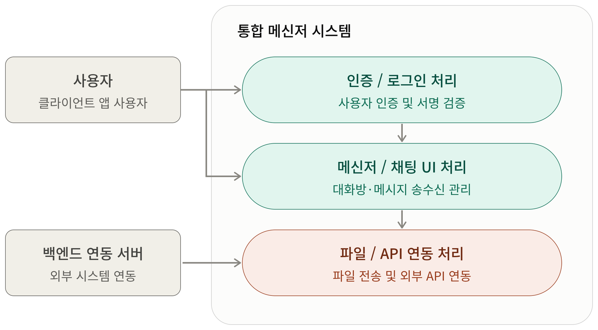
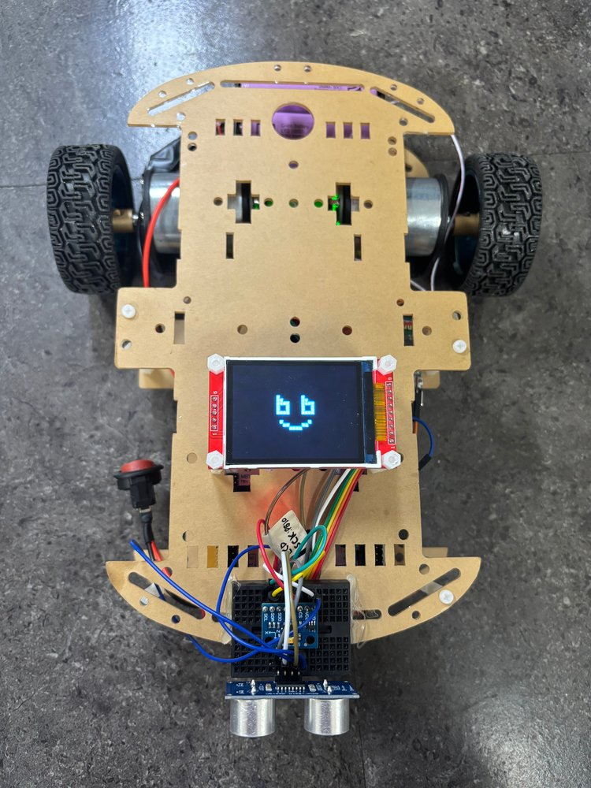
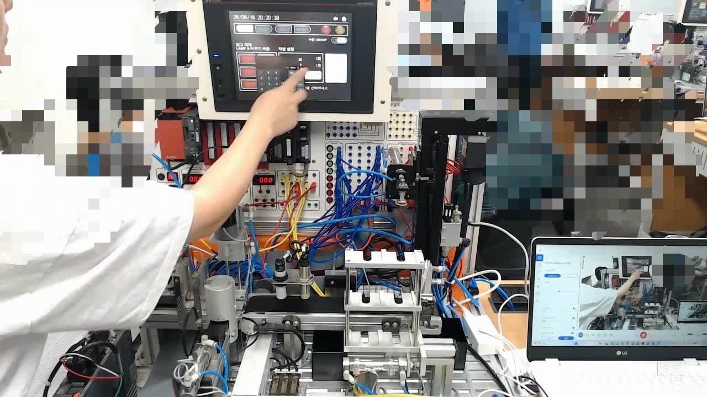
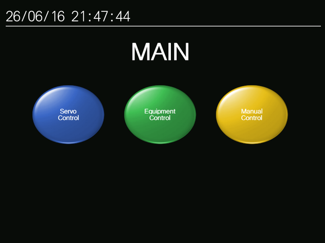
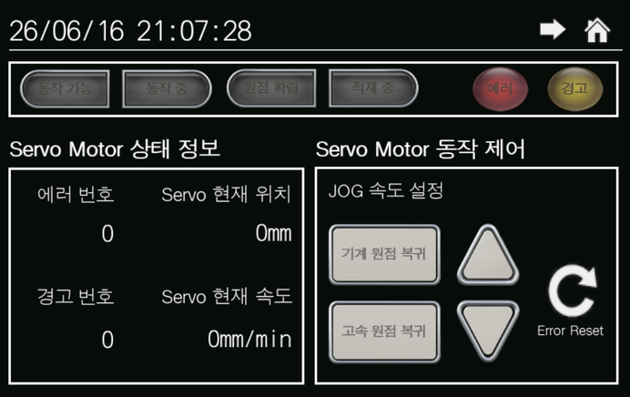
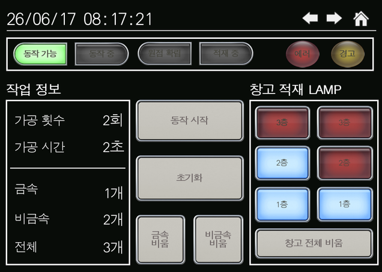
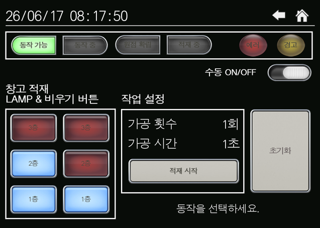
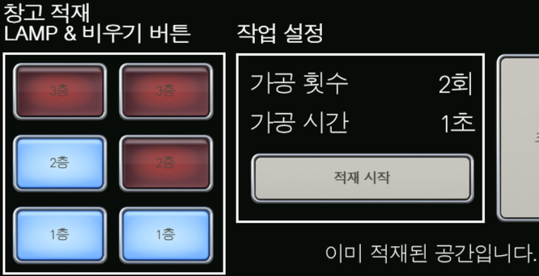
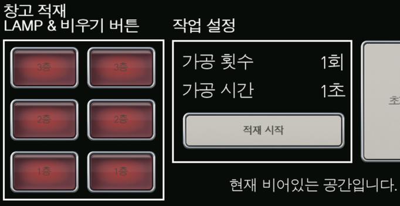

7년간의 사내 메신저 개발 실무에서 사용자 그룹별로 분리 운영되던 메신저를 하나의 구조로 통합했습니다. 기존 시스템과 사용자·조직도 데이터의 흐름을 분석해 통합 구조를 설계하고, DB 마이그레이션 · Broker 이벤트 처리 · Microsoft Teams 연동까지 데이터가 끊기지 않도록 연결했습니다. 현재는 로봇 SW 과정에서 STM32 임베디드 제어와 PLC·HMI 설비 제어로 영역을 넓히며, “입력이 어디서 생기고 어떤 상태를 거쳐 출력되는가”를 먼저 보는 개발 방식을 하드웨어로 이어가고 있습니다.
통합 사내 메신저 클라이언트 개발 및 유지보수 (C++/MFC) — 시스템 구조 분석, 통합 설계, 데이터 마이그레이션, 외부 API 연동, 장애 분석
대한상공회의소 서울기술교육센터 — STM32 임베디드, PLC·HMI, 로봇 SW
- Language
- C · C++
- Windows App
- MFC · Win32 · WinDbg (Dump / Call Stack 분석)
- Data · 연동
- Local DB 설계·Migration · REST API · Microsoft Graph API · Message Broker 이벤트 처리
- Embedded
- STM32 (CubeMX · HAL) · I2C · SPI · UART · Timer/Interrupt · ADXL345 · ILI9341
- Automation
- MELSEC-Q PLC (GX Works2 · Ladder) · GOT HMI (GT Designer3) · Servo 제어
- Tools
- Git · STM32CubeIDE · Visual Studio
통합 메신저 시스템 구축
분리 운영되던 메신저를 하나의 구조로 통합 — 기존 시스템과 데이터를 분석해 새 구조로 재구성
그룹사 확대로 사용자 그룹·업무 목적별 메신저가 따로 운영되면서 사용자·조직도·채팅 데이터도 시스템마다 따로 관리되고 있었습니다.
데이터가 어디서 생성되고 어떤 과정을 거쳐 화면에 전달되는지를 먼저 추적한 뒤, 통합 사용자·조직도 구조를 설계하고 기존 데이터를 새 구조로 이전하는 마이그레이션 로직과 클라이언트 기능을 구현했습니다.

기존 시스템 분석
메신저별 모듈 구성과 실행 흐름 파악
사용자/조직 데이터 구조 파악
데이터 생성 위치와 화면까지의 전달 경로 추적
통합 구조 설계
그룹 구분 없이 관리되는 사용자·조직도 구조 재정의
DB 및 데이터 마이그레이션
기존 로컬 DB 데이터를 새 구조로 변환·이전
클라이언트 기능 구현
로그인·조직도·친구·채팅 목록·메시지 처리
Broker 이벤트 처리
사용자·메시지 이벤트를 Broker Library로 처리
Microsoft Teams 연동
Graph REST API 메시지를 기존 흐름에 편입
메시지 송수신 흐름 안정화
중복·누락 검증 동기화, 환경별 오류 대응
데이터 흐름을 따라 구현하고, 외부 시스템까지 연결
Use Case 기반 기능 구현 · Microsoft Teams 메시지 동기화 · 실행 흐름 기반 장애 분석

- 01통합 사용자 구조 설계계열사별 사용자를 하나의 구조에서 관리하도록 사용자·조직도 데이터 재구성
- 02DB Migration기존 데이터를 새 구조로 변환, 클라이언트 로컬 DB를 안전하게 이전
- 03Broker Event 처리사용자·메시지 이벤트 흐름 분석, Broker Library 기반 처리 구조 구현
- 04Client 기능 구현로그인 · 조직도 · 친구 목록 · 채팅 목록 · 메시지 처리 (C++/MFC)
주기적 조회
중복·누락 검증
맞춰 표시·처리
- PROBLEM
- 외부 API로 조회되는 Teams 메시지를 기존 메신저의 메시지 흐름에 맞게 동기화해야 함
- APPROACH
- 클라이언트에서 Graph REST API를 주기적으로 호출하고, 이전 조회 데이터와 비교해 신규 메시지만 구분하는 동기화 로직 구현
- RESULT
- Teams 메시지를 기존 메신저에서 확인 가능하도록 연동, 중복·누락을 줄여 동기화 안정성 향상. 이후 사용자 피드백을 반영해 Teams 전용 UI·기능 개선
오류가 보인 화면만 고치는 대신, 프로그램 실행 흐름과 모듈 간 호출 관계를 따라가며 특정 환경에서만 발생하는 비정상 종료의 원인을 좁혀 해결했습니다.
Project Key Point
서로 다른 시스템을 하나로 통합하면서 데이터의 구조와 흐름을 이해하고, 실제 동작 환경에서 발생하는 문제까지 추적한 프로젝트
STM32 RC카 — IMU 기울기 기반 LCD 상태 전환
담당: 가속도계(ADXL345)의 기울기 값을 이용해 LCD 화면 이미지를 상태 기반으로 전환

ILI9341 LCD · ADXL345 · HC-SR04STM32F411RE 두 대를 Bluetooth UART로 연결한 무선 RC카. 카 보드가 PID 모터 제어·초음파 장애물 정지·IMU 기반 LCD 표시를 하나의 펌웨어에서 주기별로 통합 운용합니다.
주기 분리 구조 안에서 동작
1ms tick으로 10ms(모터) · 50ms(통신·IMU·LCD) · 100ms(초음파) 분리 — 화면 갱신을 50ms 태스크에 두어 모터 제어 주기와 독립
ADXL345 초기화I2C
DATA_FORMAT=0x08 ±2g Full Resolution, OFSZ=7 Z축 오프셋(+0.11g) 보정, POWER_CTL 측정 모드 진입
50ms 주기 가속도 읽기
DATAX0부터 6바이트 연속 읽기 → Little-endian 결합으로 X/Y/Z int16 원시값 획득
기울기 → 화면 좌표 매핑
±60 클램프 · ±6 데드존으로 떨림 제거 → −1~+1 정규화 → x³ 이징 → X 0~160, Y 0~80 px 좌표
상태 판정 · 이미지 선택
화면 중심(x=80) 대비 ±12px를 기준으로 LEFT / CENTER / RIGHT 이미지 선택, 좌표 변화가 2px 이상일 때만 갱신
Dirty-rect 부분 갱신SPI
이동으로 드러난 띠 영역만 배경색으로 지우고, 새 위치에 160×160 RGB565 이미지를 전송해 깜빡임 없이 이동
기울기에 따라 전환되는 3가지 화면 상태
펌웨어의 RGB565 배열을 복원한 실제 이미지
원시 센서값을 “안정적인 화면 상태”로 바꾸는 설계
데드존 · 비선형 이징 · 임계값 · 부분 갱신으로 떨림 없는 상태 전환 구현
데드존 ±6
수평에 가까운 미세 진동이 화면 흔들림으로 이어지지 않게 차단
x³ 이징
중심 부근은 둔감하게, 크게 기울일수록 빠르게 반응하도록 비선형 매핑
변화량 조건
좌표가 2px 이상 변할 때만 그려 불필요한 SPI 전송을 줄임
int16_t Tilt_ToScreenX(float accel) { float v = ClampFloat(accel, -60.0f, 60.0f); if (fabsf(v) < 6.0f) v = 0.0f; // deadzone float n = v / 60.0f; // -1 ~ +1 float eased = n * n * n; // cubic easing float t = (eased + 1.0f) * 0.5f; // 0 ~ 1 return (int16_t)(t * (320 - 160) + 0.5f); } /* 50ms task : IMU → 좌표 → 상태 → LCD */ ADXL345_Read(&ax, &ay, &az); int16_t x = Tilt_ToScreenX(ax), y = Tilt_ToScreenY(ay); if (abs(x - prev_x) > 1 || abs(y - prev_y) > 1) { const uint16_t *img = center_img; if (x > CENTER_X + 12) img = right_img; else if (x < CENTER_X - 12) img = left_img; Face_UpdatePosition(x, y, img); // dirty-rect prev_x = x; prev_y = y; }
초기화 검증 실패 (ID Mismatch)
원인 RDDID(0x04) 응답 불일치 — MISO 미연결로 플로팅 값이 읽힘
해결 FillScreen 테스트로 초기화 성공을 육안 검증
LCD 모듈 SD카드 인식 실패
과정 SW → 전압(3.3V→5V) → 배선 순으로 가능성 소거
원인·해결 DC/RS 자리에 SD_CS가 잘못 연결 → 재배선 후 3.3V 복구 상태에서도 정상 동작 확인
AutoStore — 소재 가공·적재 설비 PLC 제어 & HMI
HMI 입력 → PLC 시퀀스 → 설비 동작, 그리고 설비 상태를 다시 화면으로
금속/비금속 소재를 드릴로 필요한 만큼 가공한 뒤, 가공 시간과 횟수에 따라 창고 위치를 결정해 분류 적재하는 설비입니다. 가공 조건은 자동 또는 수동으로 지정할 수 있습니다.
자동 동작
- 가공 횟수 · 시간
- 가공에 따른 창고 적재
- 금속 / 비금속 / 전체 비움
수동 동작 · HMI MY PART
- HMI 화면 구성 및 연동
- 가공 조건에 따른 지정 적재
- 위치별 선택 창고 비움
- 적재/비움 시 조건 체크

왜 D 레지스터에 소재 정보를 저장했나
위치별로 금속/비금속 정보를 함께 저장해, 자동 동작으로 적재된 창고 상태와 수동 제어가 같은 데이터를 보도록 연동했습니다. 적재 전 “이미 있는지”, 비움 전 “실제로 있는지”를 같은 값으로 판별합니다.
가공 시간 · 횟수 입력 (HMI)
입력값에 따라 드릴 모터 동작
창고 위치 선택
시간 → 좌/우, 횟수 → 층 결정
창고 소재 유무 판별
Sequence 초기화
동작 완료 후 다음 명령 대기
적재된 창고 위치 선택 (HMI)
창고 LAMP 버튼으로 위치 지정
창고 소재 유무 판별
Sequence 초기화
동작 완료 후 다음 명령 대기
HMI 화면과 실제 설비 상태를 일치시키기
화면 구성 · 조건 체크 메시지 · PLC ↔ HMI 상태 동기화 문제 해결






어느 수준까지 구현할 수 있을지 막막했던 상황에서, 핵심 시퀀스(1차 목표)를 먼저 동작시키고 필요한 UI를 하나씩 추가하는 방식으로 범위를 관리했습니다.
Learning
화면과 기능을 만드는 SW 개발에서 나아가, 내가 작성한 로직이 실제 Servo Motor와 설비를 움직이는 경험을 했습니다. HMI가 설비 상태를 정확히 표현하는 것이 현장 신뢰성과 직결된다는 점을 배웠습니다.
- PROBLEM
- 설비는 동작했는데 HMI의 창고 램프·메시지가 의도한 시점에 바뀌지 않는 현상
- CAUSE
- PLC 내부 비트 상태와 HMI 표시용 디바이스가 분리되어 있어, 상태 정보가 표시 타이밍과 맞지 않음
- SOLUTION
- PLC 내부 상태를 HMI 표시용 디바이스와 연동하고 상태 갱신 로직을 수정해 사용자 화면과 실제 설비 상태를 일치